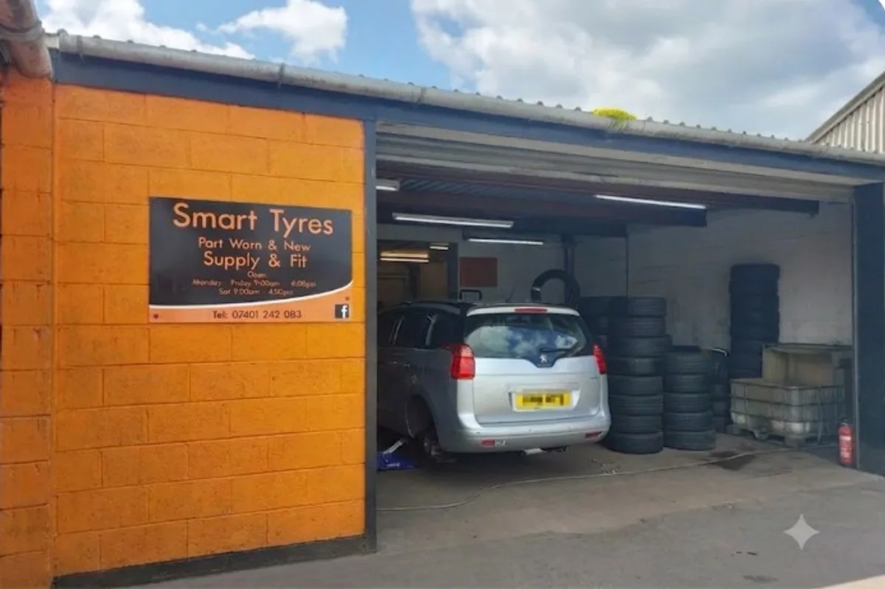
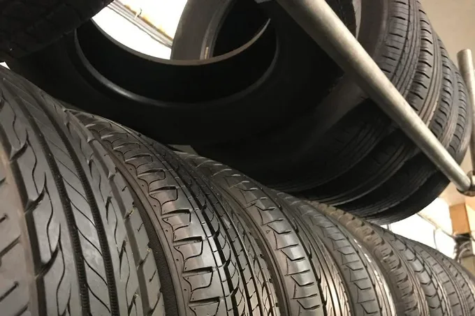
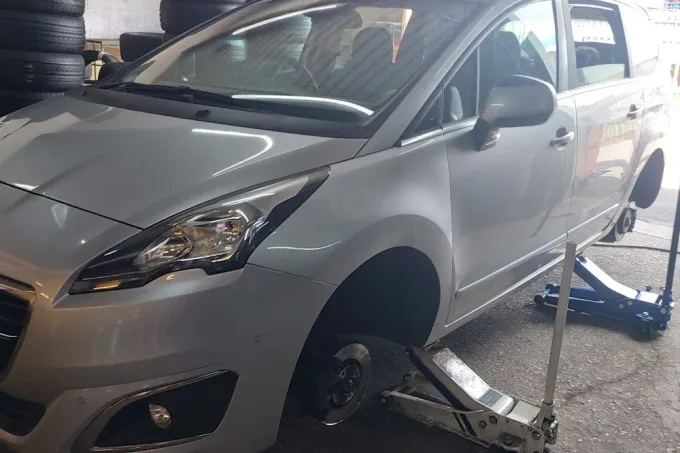
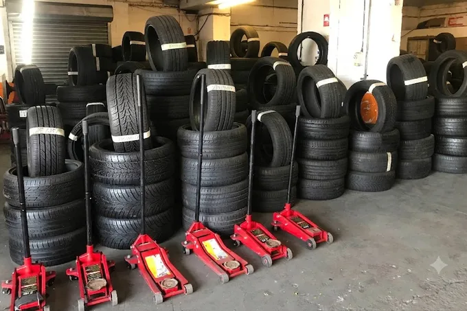
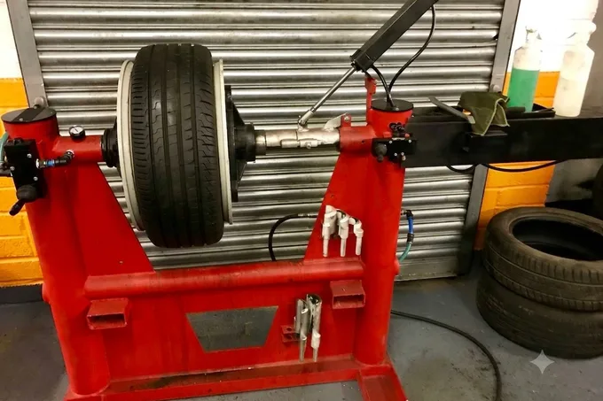

New & part-worn tyres, fitted properly.
Checked before they go on your car. Drop in to the depot on Hempsted Lane — no appointment needed for most jobs.
What we do
Tap any card for the detail.
The depot
Real photos from Hempsted Lane.




What customers say
"Brilliant service, friendly staff and great prices. Tyres were in great condition and pressure checked before fitting. Highly recommend!"
Dean Morgan · 12 March 2026"Excellent service from start to finish. The tyres are like new and great value. I'll definitely be back!"
Kelly Jones · 12 April 2026"Great selection of part worn tyres, all in excellent condition. Quick fitting and very professional. 5 stars!"
Mark Roberts · 21 April 2026"Great quality tyres and honest, reliable service. Couldn't ask for more!"
Sarah Willows · 12 April 2026"Very helpful team, good prices and quick service. Tyres were all pressure tested. Would highly recommend."
Tom Baker · 12 March 2026"Fantastic service at a great price. Tyres had loads of tread and felt safe straight away."
Lisa Thompson · 21 April 2026Find us
Unit 1, 28 Hempsted Lane — first time on the estate can be fiddly, so here's the route in
AddressUnit 1, 28 Hempsted Lane, Hempsted, Gloucester GL2 5JA
Phone01452 690710
Opening hoursMonday–Friday 9:00am–6:00pm · Saturday 9:00am–4:30pm
Getting hereJust off the Hempsted Lane, a few minutes from Gloucester city centre.
From the south (Secunda Way) follow the road round and exit onto the service road for Smart Tyres.
From the north (Hempsted Lane) follow the one way system and exit onto the service road for Smart Tyres.
Either way, look for the Smart Tyres sign just off the roundabout.
Common questions
Are part-worn tyres safe?
Every part-worn tyre we sell has a minimum of 5mm tread and is 100% pressure tested before it goes on your car. If a tyre doesn't meet that standard, it doesn't go on stock.
Do I need to book, or can I just turn up?
Most fitting jobs are first-come, first-served — call ahead if you want to check we've got your size in stock before you drive over.
How long does a fitting take?
Most jobs are done well inside half an hour, tyres balanced properly before you drive off.
What if you don't have my size in stock?
Give us a call and we'll check — with over a thousand part-worn tyres in stock plus new tyres available, most sizes aren't a problem.